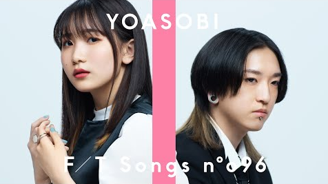
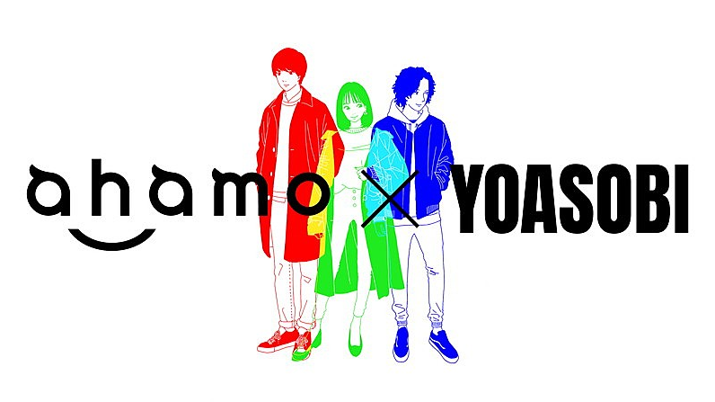
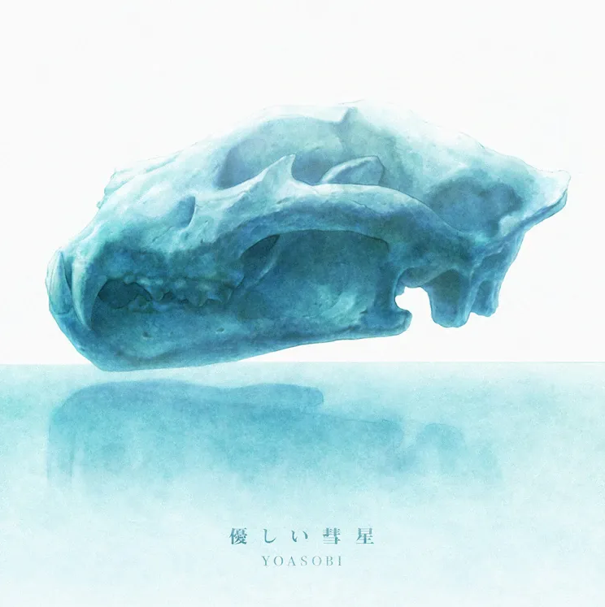

NEWS
2021.2.26

THE FIRST TAKE에 출연해 군청을 공연했다. 이쿠라 혼자 출연했던 THE HOME TAKE 촬영 당시와 달리 아야세와 이쿠라가 함께 무대에
섰으며, 라이브에서 함께하는 밴드 세션 멤버들은 물론 코러스로 참여한 플러소니카의 멤버들까지 전원이 등장했다. THE FIRST TAKE가 일반적으로 한 번의 섭외로 두 개의
영상을 녹화하는 만큼 3월 10일에 두 번째 영상이 업로드, 이쿠라 홀로 등장해 상냥한 혜성을 불렀다.
2021.2.24

NTT 도코모의 새로운 요금제 'ahamo'의 CM송으로 신곡 '삼원색(三原色)'이 타이업되었음이 발표되었다. 원작은 곡을 위해 각본가 코미카도
유이치로(小御門優一郎)가 쓴 소설 〈RGB〉. 2020년 3월 30일 숏 버전 스페셜 MV가 공개되었으며, 음원은 초여름에 발매될 예정.
2021.1.18
CDTV 라이브! 라이브!에 출연했다.
2021.1.18
후지 테레비의 아침 방송 메자마시 테레비의 테마곡을 담당하기로 결정되었음이 발표되었다. Official髭男dism의 HELLO를 이어 2021년
4월부터 사용될 예정이며, 이에 맞추어 monogatary.com에서 요아소비 콘테스트 vol.3 with 메자마시 TV가 개최되었다.
2021.1.14

요아소비가 오프닝을 맡은 BEASTARS 2기 2화의 방영과 함께 더블 타이업으로 엔딩곡 '상냥한 혜성(優しい彗星)' 역시 담당했음이 공개되었다.